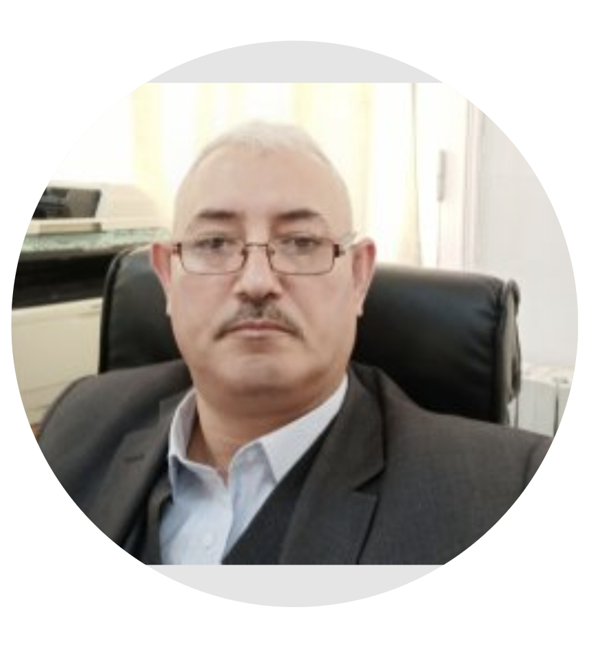

HAMIMID Mourad
Welcome to my academic website. I am a university professor and researcher working at the intersection of engineering, applied mathematics, numerical computation and higher education. This website brings together my teaching activities, research interests, scientific publications and educational resources.

University of Bordj Bou Arreridj Department: ElectromechanicsAbout Me
Academic profile, teaching activities, research interests and educational development.
University Professor & Researcher
I am a university professor and researcher at the University of Bordj Bou Arreridj, working in the fields of electrical engineering and electromechanics. My academic interests combine engineering, applied mathematics, numerical methods and computational techniques.
My academic activities include teaching engineering courses, developing educational resources, supporting students in their learning, and contributing to scientific research in modelling, numerical simulation and engineering applications.
Through this website, I aim to share useful academic materials, courses and resources with students, researchers and anyone interested in engineering education and applied numerical methods.
Academic Interests
- Numerical Methods
- C++ Programming
- Electromagnetic Field Theory
- Numerical Simulation
Courses & Teaching
Courses, educational resources and engineering subjects.
Numerical Methods
Numerical techniques for solving engineering and mathematical problems, including nonlinear equations, interpolation, integration and differential equations.
C++ Programming
Fundamentals of C++ programming, variables, structures, classes, inheritance and object-oriented programming.
Electromagnetic Field Theory
Fundamental concepts of electromagnetic fields, Maxwell's equations, magnetic fields and electromagnetic applications.
Research Interests
Areas of scientific research and engineering applications.
Electromagnetic Modeling
Modeling and analysis of electromagnetic phenomena for engineering applications.
Hysteresis Modeling
Study and modeling of magnetic hysteresis and nonlinear magnetic behavior.
Numerical Simulation
Numerical approaches and computational techniques applied to engineering problems.
Let's connect
For academic questions, teaching resources, research collaboration or professional communication, please feel free to contact me.